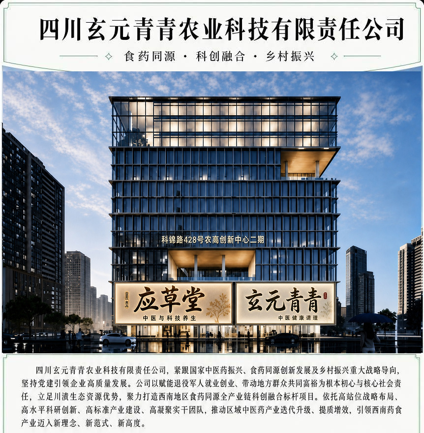

公司介绍

产业固本拓基，标准赋能百亿赛道
公司精准锚定云南姚安核心产业布局，固化天冬标准化种植示范区与良种种苗繁育基地建设规模，筑牢道地药材规模化、规范化、产业化发展根基。聚焦天冬、天麻、余甘子、黄精、川贝母、何首乌、白芨等川滇特色优势药食资源，持续开展优良种质选育、栽培技术革新与丰产体系优化，实现核心品种产能与综合效益稳步提升60%-80%。公司全力服务国家级中医药产业创新示范区创建建设，为姚安打造百亿级中药材产业集群夯实核心底盘。始终秉持高标准建设、高品质管控、高水平运营理念，全面推进中药材GAP规范化种植认证与欧盟国际标准双认证，以国内权威集采资质、国际出口品质背书，双向打通国内高端医药市场与海外外销渠道，构建标准化、品牌化、国际化的现代中药产业体系。
科创跨界融合，科技赋能民生康养
公司深耕药食科创与现代康养融合创新，依托自有高端康养品牌应草堂，实现传统中医药配伍智慧与石墨烯现代康养科技双向赋能、深度耦合。紧扣国民慢病防治与中老年健康刚需，针对慢性疼痛、肝肺结节、妇科养护、肛肠调理、育发黑发等重点康养领域，构建定时量化、精准对症、系统可控的科学化康养解决方案，推动传统中医药养生由经验化向标准化、精准化、现代化全面转型。依托民生普惠品牌天府之宴，聚焦慢病调理、损伤修复、体质滋养三大核心方向，匠心打造99道标准化食药同源养生菜品体系，让高端药食科技真正实现普惠万家、惠及民生。
数智转型升级，重塑现代农业范式
针对传统中药材种植用工密集、成本偏高、标准化薄弱的行业痛点，公司自主搭建中医药种植信息化智慧管控平台，全面落地种植全流程机械化、信息化、智能化赋能体系，以智能科技替代约80%传统人工劳作，大幅降低生产成本、规范种植标准、提升产业效能，打造西南地区智慧化、数字化、现代化中药材种植标杆样板。
智聚高端智库，产学研一体强芯赋能
公司坚持人才为第一资源、科创为第一动力，深度聚合四川大学、成都中医药大学、四川省中医科学院、成都市农林科学院、四川农业大学等多家省内顶尖高校与科研院所智力资源，组建近百人的高素质、专业化、高凝聚力核心科研团队。构建一二三产深度联动、产学研用闭环融合的创新发展机制，实现科研攻关、技术迭代、成果转化、产业落地无缝衔接，以顶尖人才队伍夯实产业创新核心竟争力，以硬核科研实力支撑企业高质量、可持续发展。
精准场景布局，构筑多元市场矩阵
立足川滇独特的生态禀赋、立体气候与优质种养环境，聚焦特殊作业场景、专属从业群体、特色细分渠道，定向研发落地十大及以上系列化功能性产品、特色康养饮品，打造差异化、场景化、专业化的高端药食产品矩阵。依托严苛的双标品质体系与科创核心优势，双向深耕国内大健康细分市场与国际出口市场，持续拓宽产业边界、提升品牌势能、增强行业话语权。
党建领航聚力，勇担富民兴企使命
公司始终坚持党建引领发展大局，将政治担当、社会责任、民生福祉深度融入企业发展全过程。专项搭建退役军人就业创业赋能平获，金方运视车人理功技能培新程。业特饭业出动增收、以发展共享红利，通过基地规模化运营、属地务工吸纳、技术普惠帮扶、产业分红联动等多元模式，持续带动地方群众稳就业、增收入、共发展，扎实赋能乡村振兴，助力实现共同富裕。
未来展望
展望未来，四川玄元青青农业科技有限责任公司将始终坚守国家战略导向、深耕药食科创主业、厚植民生担当情怀、凝聚实干奋进力量，以高远战略格局、顶尖科创实力、标准产业体系、硬核实干团队，持续引领西南食药同源与中医药产业创新升级，为区域产业高质量发展、乡村全面振兴、国民大健康事业持续贡献新动能、谱写新篇章。